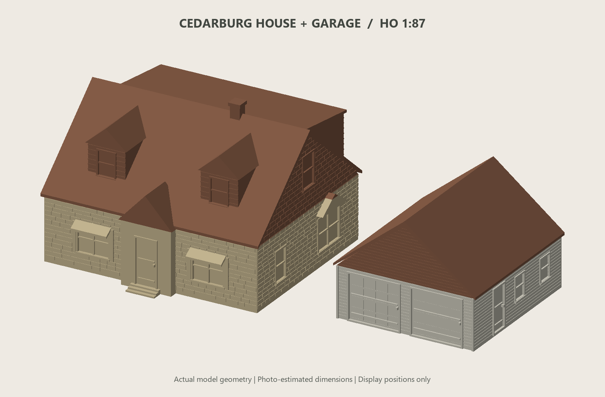

Scale models / HO · 1:87
Cedarburg house & garage
A photo-interpreted house and detached garage, split into printable walls and roofs for a model railway or diorama.
- Scale
- HO · 1:87
- House, approx.
- 128 × 121 × 85 mm
- Garage, approx.
- 80 × 87 × 61 mm
- Print parts
- 4 walls / roof parts
{kind=link}

Front · Model render. Select the image to enlarge.
{kind=link}
{kind=link}
Two buildings, four printable parts
Print the four numbered STL parts or use the two geometry-only 3MF plates. The roofs lift off for painting and assembly. The rear house entry sits beneath the balcony. Assembled-reference STLs are included for digital inspection; they are not additional kit parts.
Printing & assembly
Import in millimeters at 100% scale; the parts are already HO size. Select your own printer and filament profiles. The documented MK3.5 validation used a 0.4 mm nozzle, 0.10 mm layers, three perimeters, and 10% infill. Use snug supports for the house roof. Follow PRINT_GUIDE.md for supports, dry-fitting, and painting.
Editable, photo-based architecture
The Python generator and dimensions.json are included. Building dimensions were estimated from photographs with assumed garage-door dimensions as a scale reference. Windows and doors are recessed closed surfaces for painting, and fine features are thickened for FDM printing.
Design: Beau Gosse · AI-assisted creation.
CC BY-NC-SA 4.0 · Noncommercial use, attribution, and share-alike.